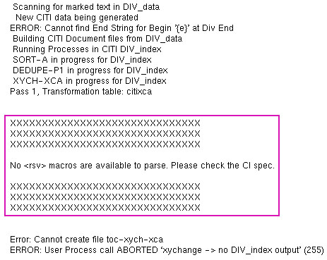
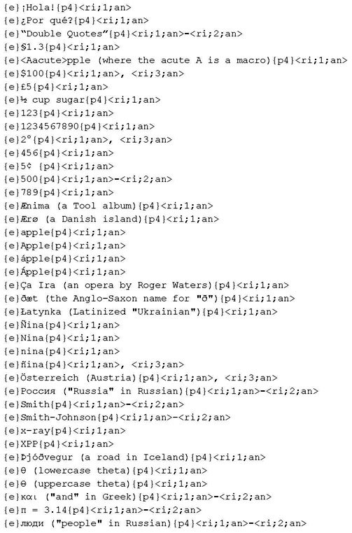
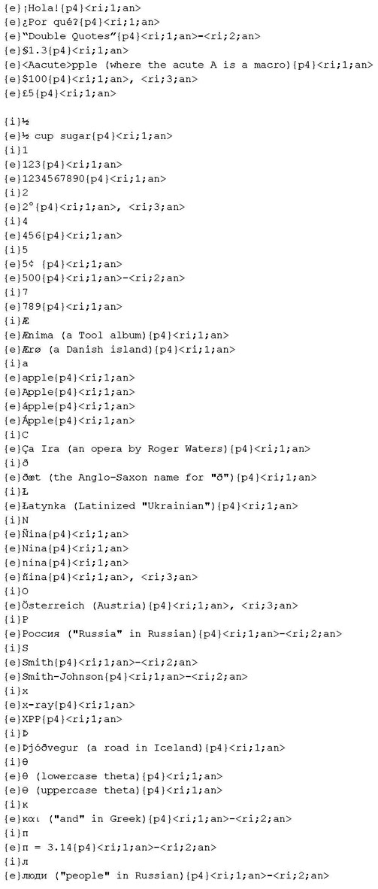
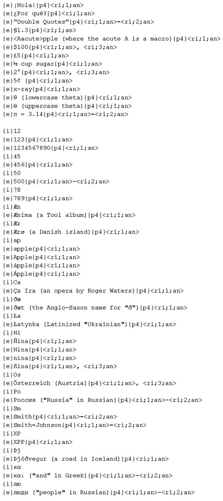
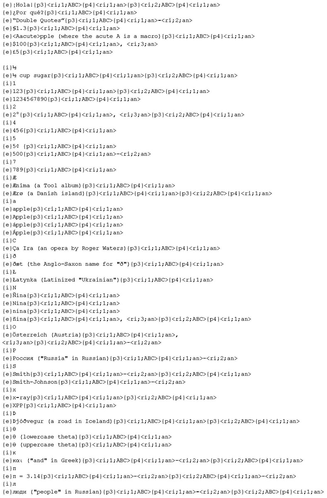
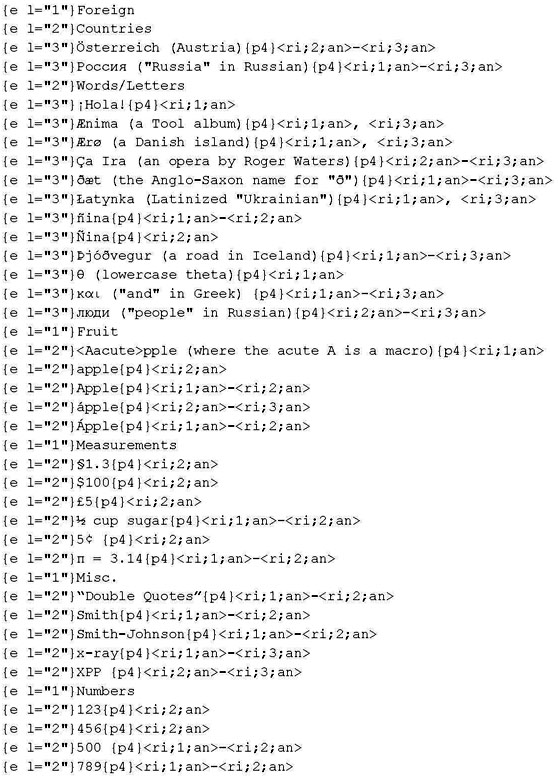
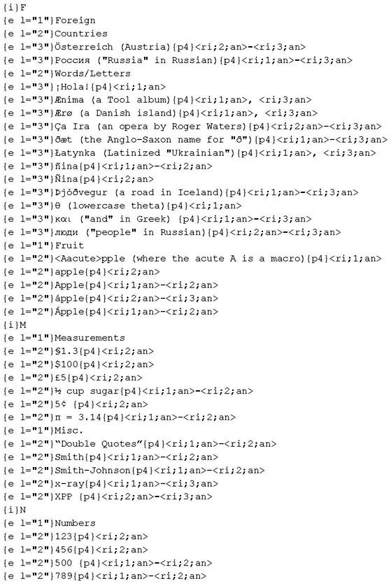

XPP::CITI::Automate -- Automates the formatting and parsing of CITI extracts.
In its simplest form:
#!/usr/local/bin/perl use warnings; use strict; use lib '/usr/local/lib/perl_aps'; use XPP::CITI::Automate; XPP::CITI::Automate->new->process;
In its verbose (if not sane) form:
#!/usr/local/bin/perl
use warnings;
use strict;
use lib '/usr/local/lib/perl_aps';
use XPP::CITI::Automate;
XPP::CITI::Automate->new(
pages => [qw(p3:ABC:{section} p4:rn:{page})],
initial_case_sensitive => 0,
initial_ignore_diacritics => 0,
initial_prefix => '{idx_initial}',
initial_re => '(Mc|[\p{L}\p{N}])',
initial_candidates => [qw(
{tag*}
<macro>
)],
modifier => sub {
my $final = shift;
if ($final) {
### Modify the data at the very end of the process.
}
else {
### Modify the data prior to initializing.
}
},
move_uninitialized_to_top => 1,
strip_eb_ep => 1,
strip_keeps => 1,
strip_pgafs => 1,
tmp_dir => '/tmp',
debug => 1,
)->process;
XPP::CITI::Automate parses and reformats CITI extracts.
It:
<rsv> macros into friendlier formats. The user can control which multi-part page numbers are used (p1-p6), what print-style (format) they're output as (arabic numeral, roman numeral, alpha character, etc.), and what they're prefixed by (generally a tag). Page numbers are automatically separated by a comma and a space (1, 3, 5), ranged (1-5), or a mix of the two (1, 3-5).<ks>, <ke>, <vk>) and breaks (<eb>, <ep>).candidates
By default all prefixes are included in the initializing process. When more than one level is present in the extract you can control which are initialized and this is done by specifying candidates. For example, if your tags are
{level_one}and{level_two}, you can restrict the initializing to{level_one}by specifying it as a candidate:initial_candidates => [qw( {level_one} )]Similar to CITI's functionality, you may use an asterisk to include tags or macros that have attributes:
initial_candidates => [qw( {level_one*} )]Lastly, multiple candidates are valid:
initial_candidates => [qw( {level_one*} <level_one*> )]
initializing; initial lettering
The process of generating initials from strings; e.g., "A" is the initial of "Apple", "B" the initial of "Banana", "1" the intial of "123", etc. This is customizable and not restricted to one character or alpha characters. Also, any candidates that were not initialized (because they didn't match the pattern—punctuation, for instance) will be placed at the beginning of the file. This is done to prevent erroneous intermixing and it can be disabled if needed.
prefix
This is synonymous to CITI's "Insert String" field—the content (generally a tag, possibly a macro) that is inserted before the extracted data.
print-style
These are described under
<ri>in the XyMacro documentation.
Four things must be done to use this module:
none" as <rsv> macros are required for parsing. If for some reason you do not need to display page numbers simply suppress them within the XPP styles or remove them using the modifier feature.toxsf and compose and come after any sort and/or dedupe processes.
By default the module does the following:
<rsv> macros, prefixes them with a {p4} tag, and outputs them as arabic numerals./tmp and removes them automatically.When initial lettering is activated it has the following defaults:
Creates the object and defines its parameters:
A boolean that controls debugging. When enabled the script outputs the name of the temporary files that are created and does not remove them automatically. Do not leave this option on after debugging as it will retain a slew of unecessary files. This defaults to 0.
This is supplied as an array reference and each element specifies a candidate. See "candidates" under "TERMINOLOGY".
A boolean that makes initializing case sensitive, e.g., "A" and "a" will be not grouped together under "A", but separately under "A" and "a". This defaults to 0.
A boolean that makes initializaing ignore diacritical marks, e.g., "A", "Á", "À", and "Å" will all be grouped under the base character of "A". This defaults to 1.
A string (generally a tag, possibly a macro) used to prefix the initials. When this is set it causes the module to perform initial lettering. By default this is not set and initial lettering is not performed.
A string used to override the default regular expression—([\p{L}\p{N}])—that controls initializing. The default matches any one character that is classified as a letter or digit, but you may change this as you wish. Be sure to enclose the part you want initialized in capturing parenthesis: ().
For example, if you want last names that start with "Mc" to have their own initial and also perform the default initializing, use:
(Mc|[\p{L}\p{N}])
You can also initial any character by using:
(\X)
Lastly, keep in mind that initializing is not restricted to one character; you can do any number:
(\X{2})
For more information see the Regular Expression Unicode Properties here and Perl's regular expression docs here.
A user-defined subroutine that modifies the entire data set (stored in $_). It is called after all other processes have completed; however, it will also be called before the initializing process when it is ran. An argument is passed to this routine that indicates where in the process flow it has been called: if 0, it is being called prior to initial lettering; if 1, it is being called after the entire set of processes. This can be used to perform different sets of modification like so:
modifier => sub {
my $final = shift;
if ($final) {
### Modify the data at the very end of the process.
}
else {
### Modify the data prior to initializing.
}
}
This prevents candidates that did not meet the initializing criteria from being moved to the top. This is useful when working with hierarchical data that should not be moved. This defaults to 1.
This is supplied as an array reference and each element specifies the following separated by colons:
<rsv> macros.This defaults to [qw( p4:an:{p4} )] which uses the actual page number (p4), displays it as an arabic numeral (an), and prefixes it with a {p4} tag ({p4}). Thus, an entry on the first page would be followed by: {p4}1.
When pages are specified their print-styles and prefixes default to "an" and "{pX}" respectively, where X is the multi-part page number (1-6). Thus, [qw( p3 )] is the same as [qw( p3:an:{p3} )].
What if you need a p3 that prints in uppercase letters followed by an arabic numeral p4 (A1, A2, ..., B1, etc.)? Use [qw( p3:ABC p4 )] to get output like {p3}A{p4}1.
A boolean that determines if <eb> and <ep> macros (with or without arguments) are stripped from the file. This defaults to 1.
A boolean that determines if keep macros are stripped from the file. This will remove the following macros (with or without arguments): <ks>, <ke>, <vk>. This defaults to 1.
A boolean that determines if pgrafs (unescaped percent signs) are stripped from the file. This defaults to 1.
Allows the user to change the directory where temporary files are created. This defaults to /tmp.
Executes the processes defined above.
Because CITI's output runs together and is often verbose errors are made obvious as seen below:
XPP::CITI::Automate->new->process;
XPP::CITI::Automate->new(
initial_prefix => '{i}'
)->process;

XPP::CITI::Automate->new(
initial_prefix => '{i}',
initial_re => '([\p{L}\p{N}]{2})',
)->process;

XPP::CITI::Automate->new(
initial_prefix => '{i}',
modifier => sub {
my $final = shift;
if ($final) {
### Group all numbers under "Numerics"
s/^\{i\}\p{N}+\n/{i}Numerics/m;
s/^\{i\}\p{N}+\n//gm;
}
else {
### Initial cap entries prior to initializing
s/(?<=\{e\}\x1f)(\p{L})/uc $1/eg;
}
},
)->process;

XPP::CITI::Automate->new(
pages => [qw(p3:ABC p4)],
initial_prefix => '{i}',
)->process;

XPP::CITI::Automate->new->process;
XPP::CITI::Automate->new(
initial_prefix => '{i}',
initial_candidates => ['{e l="1"}'],
move_uninitialized_to_top => 0,
)->process;
